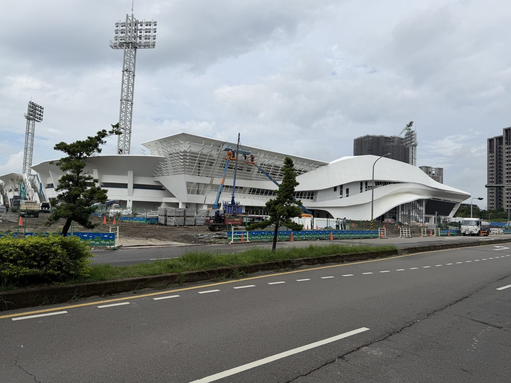
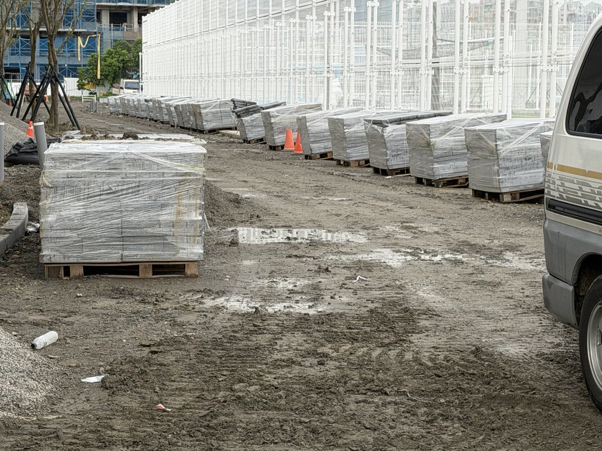
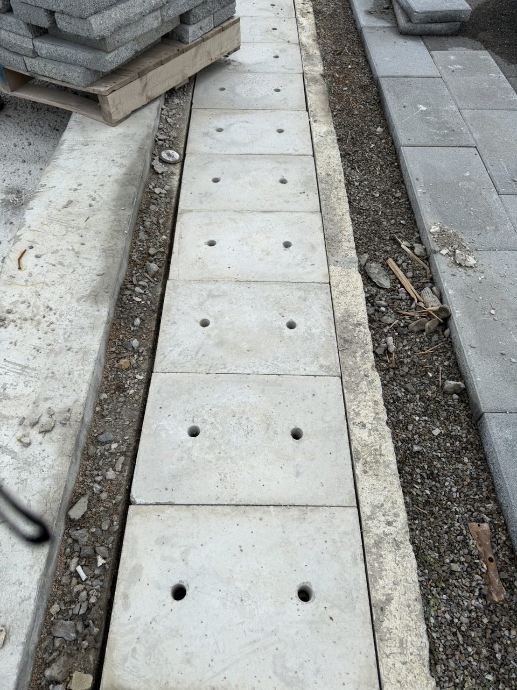

台中大里・鋪面工程專業施作
三十年鋪面工程，
上百件公共工程案場實績。
連鎖磚、植草磚、花崗石鋪面、石籠護坡，公共工程與集合住宅案場都做。工法怎麼選、工期怎麼抓，靠的是三十年累積下來的現場判斷。
連鎖磚、植草磚、花崗石鋪面、石籠護坡，公共工程與集合住宅案場都做。工法怎麼選、工期怎麼抓，靠的是三十年累積下來的現場判斷。
以下為部分完工與施工中案場紀錄。

由吳嘉栩建築師事務所設計監造的大型交通建設，宜軍負責站體廣場鋪面施作。

知名畫家江賢二創辦、國際藝術家共同捐助成立的美術館，宜軍負責庭園石材鋪面工程。

台灣百年林業鐵道系統、國家級觀光地標，宜軍負責車站周邊花崗石板步道鋪面。

全台首座FIFA Quality Pro最高等級認證足球場，宜軍負責周邊景觀鋪面施作，工程進行中。


由吳嘉栩建築師事務所監造、業主為臺中市政府運動局(代辦機關臺中市新建工程處)之大型運動園區工程。全台首座符合亞洲足球聯盟(AFC)規範、並取得國際足球總會(FIFA)Quality Pro最高等級認證的專業足球場地，占地約4.7萬平方公尺、逾6,000席座位。宜軍負責園區周邊景觀鋪面施作，工程持續進行中。


配合站體弧形量體與白色網格天棚結構，施作候車廊道與月台聯絡通道鋪面，深色人字砌連鎖磚與大面積花崗石廣場銜接，現場放樣拉線確認每一道弧形收邊。站體地下三層停車場規劃可容納 506 輛小客車、1,290 輛機車，工程規模不小。


灰色連鎖磚十字對縫廣場，搭配心形裝置藝術與圓頂涼亭，紅磚壓邊溪畔步道，弧形放射拼貼考驗每一塊磚的角度精度。


從乾砌毛石擋土牆到石籠護坡，一路施作到完工廣場，橫跨數月的護堤景觀美化工程，兼顧防洪機能與親水景觀紋理。

山坡地形階梯，仿木紋模板結合鵝卵石鑲嵌踏面，搭配扇形放射連鎖磚廣場，施工原則「圓從內而外、階梯下而上」。


冷鏈設施基地鋪面整建，連鎖磚廣場與黑白相間安全島柱列，植草磚舖設面積逾千坪，舖工、沃土回填、碎石整平三道工序分開精算。


動物收容與防疫設施周邊，以鵝卵石填充鋼籠圍牆界定基地範圍，戶外廣場則採蝴蝶造型連鎖磚拼貼，兼顧圍籬耐久性與親和的公共景觀質感。


建案臨路巷道以花崗石鋪設，配合叉車搬運石材、現場切割收邊，3 天完工交件；街屋後巷則結合連鎖磚與花崗石雙材質，大量人手孔蓋與管線檢查井收邊，考驗的是細節而不是面積。

公所前廣場採菱格紋連鎖磚拼貼，深淺雙色磚交錯排列成幾何圖樣，完工後為當地重要的公共集會空間。


依 CAD 施工平面配置圖現場放樣，集貨場周邊瀝青混凝土路面銜接連鎖磚廣場與行人穿越道，弧形收邊比對圖面座標，分區分期完成。


由中興大學藝術教授發起、集結國際藝術家共同捐助成立的美術館，鄰近金樽國際衝浪聖地。依山面海的庭園景觀，石材小方塊鋪面搭配石籠護坡與階梯，配合現場高低差分區施作，讓建築、庭園與海景連成一體。


埤塘周邊環湖步道，搭配仿木紋水泥護欄，兼顧生態親水景觀與護欄耐久性，鋪面與護欄同步施作完成。


圍籬沿線以小型剷土機配合人工，逐段安裝花崗石路緣石塊，收邊對齊圍籬走向，為後續鋪面施作打底。


沿木屋聚落蜿蜒而上，一路銜接祝山車站——台灣鐵路系統海拔最高點，2,451公尺。花崗石板依山勢現場裁切鋪設，山區施工條件受限，材料進場與工序安排都得配合地形彈性調整。業主為農業部林業及自然保育署嘉義分署，工期民國114年8月至115年1月。


緊鄰彰化藝術館的市區主要道路，深淺灰花崗石交錯鋪設圓弧轉角廣場與沿街人行道，市區施工同步維持人車動線，工序與交管配合度要求高。業主為彰化縣政府，主辦承造商嘉洋營造之工程總經費約新台幣4,900萬元(非宜軍分包金額)。


社區兒童遊戲場用地新闢，紅灰雙色連鎖磚交錯鋪設廣場動線，銜接周邊道路與人行空間，分區分期施作。業主為臺南市官田區公所，工期民國114年6月至115年6月。


老街屋聚落旁的公園基地，小型挖土機配合人工鋪設紅灰雙色連鎖磚廣場，銜接周邊道路動線，分區分期完成鋪面施作。
每個案場都是不同的地形、不同的排水需求。工法選擇從現場丈量開始。
十字對縫、人字砌、菱格紋、扇形放射，依廣場動線與排水坡度決定拼法，弧形收邊不打折。
舖工、沃土回填、碎石整平三道工序分開施作，兼顧透水機能與承重需求，單案曾達千坪以上。
集合住宅巷道、街屋後巷、建案入口，石材對花與坡度收整，追求接近無縫的完工質感。
乾砌毛石牆、鋼籠石材填充，用於河堤護岸與邊坡穩定，兼顧排水與景觀紋理。
紅磚壓邊、水泥路緣、人手孔蓋收邊，這些看不見的細節決定廣場十年後還平不平整。
依 CAD 施工圖現場放樣拉線，圓從內而外、階梯下而上，誤差控制在工班自己都挑剔的範圍內。
依 CAD 施工圖現場拉線放樣，確認坡度與排水方向，計算材料需求量與柱距。
依鋪面種類決定基層工法，植草磚另需沃土回填層，確保長期滲透與承重表現。
依現場動線選擇對縫、人字砌或放射拼法，弧形與路緣收邊皆為現場裁切對齊。
清縫、勾縫、表面清潔，交付前再次確認平整度與排水坡度。
30 年來累積合作超過 200 家營造廠商，以下為長期配合、承接台南仁德、台中轉運中心、雲林肉品市場等公共工程分包項目的代表廠商。
案場實績橫跨台中、台南、彰化、雲林、桃園、臺東等縣市，全台案件皆依需求調度承接。